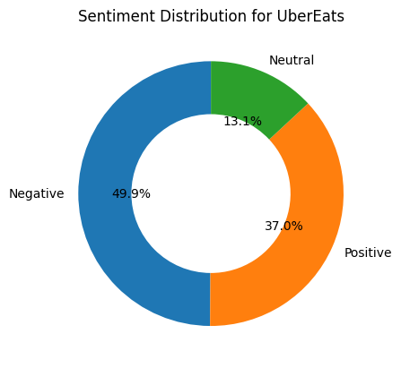
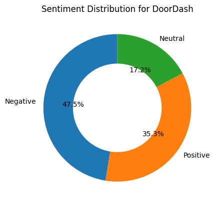
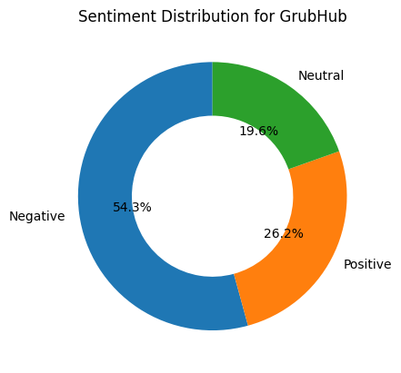

def plot_sentiment_distribution(selected_app):# Filter your dataframe based on app filtered_df = df_combined[df_combined['app_name'] == selected_app]# Get sentiment counts sentiment_counts = filtered_df['sentiment'].value_counts()# Plotting donut chart fig, ax = plt.subplots() wedges, texts, autotexts = ax.pie( sentiment_counts, labels=sentiment_counts.index, autopct='%1.1f%%', startangle=90, wedgeprops=dict(width=0.4) # Makes it a donut ) ax.set_title(f'Sentiment Distribution for {selected_app}') plt.show()
Sentiment Distribution for UberEats
Code
plot_sentiment_distribution('UberEats')

Sentiment Distribution for DoorDash
Code
plot_sentiment_distribution('DoorDash')

Sentiment Distribution for Grubhub
Code
plot_sentiment_distribution('GrubHub')

The donut chart above illustrates the sentiment distribution of customer reviews for food delivery apps. Each segment of the chart represents the percentage of reviews that are classified as Positive, Neutral, or Negative. This visualization offers a clear and comparative view of user satisfaction levels, highlighting how customer perception varies across different apps.
Sentiment Distribution for Data Sources
Code
# ---------------------------# Clean your data# ---------------------------df_combined['sentiment'] = df_combined['sentiment'].str.lower()df_combined['data_source'] = df_combined['data_source'].str.strip().str.title()# ---------------------------# Define sentiment colors# ---------------------------sentiment_colors = {'neutral': '#90EE90','positive': '#32CD32','negative': '#006400',}# ---------------------------# Setup# ---------------------------sources =sorted(df_combined['data_source'].unique())sentiments = ['neutral', 'positive', 'negative']fig = go.Figure()buttons = []# Create a donut chart for each data sourcefor i, src inenumerate(sources): filtered_df = df_combined[df_combined['data_source'] == src] counts = filtered_df['sentiment'].value_counts() values = [counts.get(s, 0) for s in sentiments] colors = [sentiment_colors[s] for s in sentiments]# Add a pie (donut) chart trace for this source fig.add_trace(go.Pie( labels=sentiments, values=values, hole=0.5, marker=dict(colors=colors), name=src, visible=(i ==0), textinfo='percent+label', insidetextorientation='radial' ))# Create button to toggle visibility buttons.append(dict( label=src, method="update", args=[{"visible": [j == i for j inrange(len(sources))]}, {"title": f"Overall Sentiment Distribution for {src}"}] ))# ---------------------------# Add dropdown menu# ---------------------------fig.update_layout( updatemenus=[dict(type="dropdown", buttons=buttons, direction="down", x=0.1, y=1.15 )], title=f"Overall Sentiment Distribution for {sources[0]}", height=500)fig.show()
Unable to display output for mime type(s): application/vnd.plotly.v1+json
The donut chart visualizes the sentiment distribution for a selected app across various review platforms.Each segment of the chart represents the percentage of reviews labeled as Positive, Neutral, or Negative. This allows for comparison of user sentiment trends across different communities and platforms where the app is reviewed.
Unable to display output for mime type(s): application/vnd.plotly.v1+json
This horizontal bar chart displays the top 10 most upvoted customer reviews for a selected food delivery app. Each bar is color-coded by sentiment—blue for Neutral, red for Negative, and green (if present) for Positive—providing a quick visual reference to the tone of each review. The dropdown allows switching between UberEats, DoorDash, and GrubHub for comparison.
Top 10 Upvoted Reviews for Data Sources
Code
# -----------------------------# Clean data# -----------------------------df_combined['sentiment'] = df_combined['sentiment'].str.capitalize()df_combined['review'] = df_combined['review'].astype(str)df_combined['data_source'] = df_combined['data_source'].str.strip().str.title()# -----------------------------# Define sentiment colors# -----------------------------sentiment_colors = {'Positive': 'green','Negative': 'red','Neutral': 'blue'}# -----------------------------# Limit to Reddit and Google Play# -----------------------------valid_sources = ['Reddit', 'Google Play']sources = [s for s in valid_sources if s in df_combined['data_source'].unique()]# -----------------------------# Build Plotly figure# -----------------------------fig = go.Figure()buttons = []for i, source inenumerate(sources): source_data = df_combined[df_combined['data_source'] == source] top_10 = source_data.sort_values(by='upvote_count', ascending=False).head(10) review_labels = top_10['review'].apply(lambda x: x[:80] +'...'iflen(x) >80else x) bar_colors = top_10['sentiment'].map(sentiment_colors).fillna('gray') fig.add_trace(go.Bar( x=top_10['upvote_count'], y=review_labels, orientation='h', marker_color=bar_colors, name=source, visible=(i ==0), hovertext=top_10['review'], )) buttons.append(dict( label=source, method="update", args=[ {"visible": [j == i for j inrange(len(sources))]}, {"title": f"Top 10 Upvoted Reviews for {source}"} ] ))# -----------------------------# Final layout# -----------------------------fig.update_layout( title=f"Top 10 Upvoted Reviews for {sources[0]}"if sources else"No Data", xaxis_title="Upvote Count", yaxis_title="Review", yaxis=dict(autorange='reversed'), height=600, updatemenus=[dict(type="dropdown", buttons=buttons, x=0.1, y=1.15 )])fig.show()
Unable to display output for mime type(s): application/vnd.plotly.v1+json
This horizontal bar chart displays the top 10 most upvoted customer reviews from the selected data source. Users can switch between platforms such as Google Play and Reddit using the dropdown. Each bar represents a highly upvoted review and is color-coded by sentiment — red for Negative, blue for Neutral, and green for Positive. This plot highlights not only the most talked-about experiences on each platform but also the general sentiment users express toward food delivery apps depending on where the review was posted.